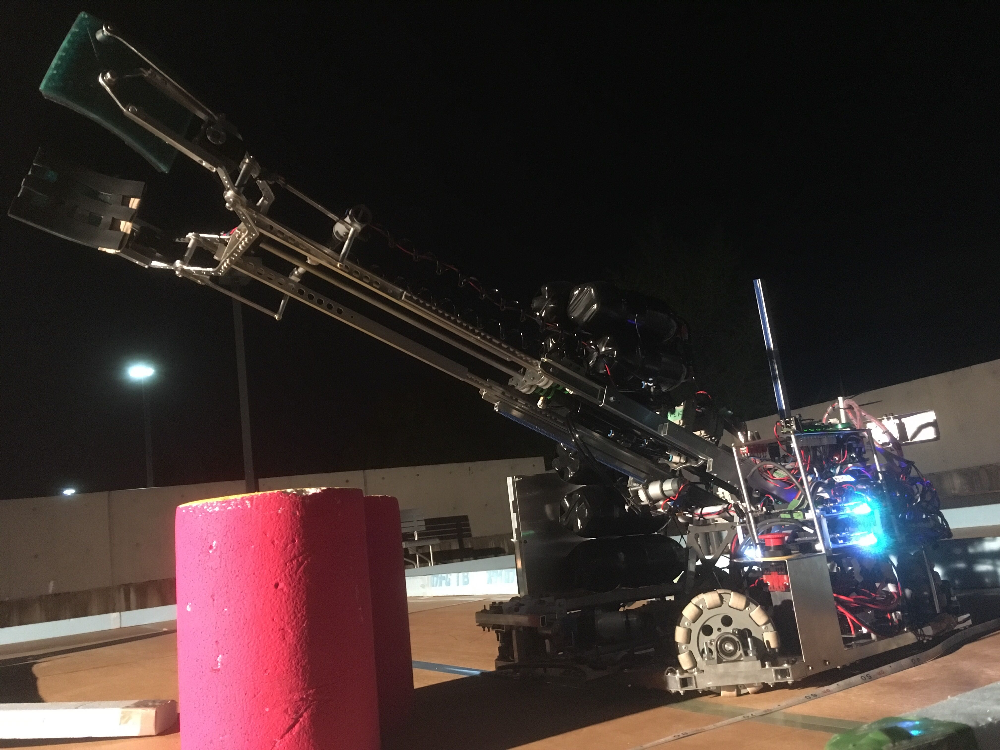
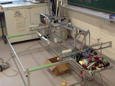
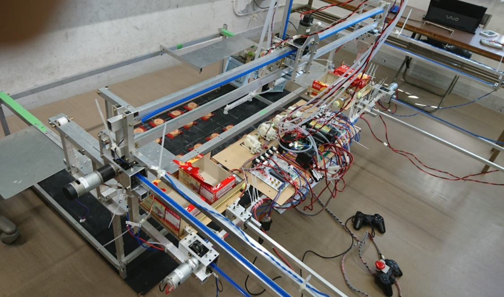
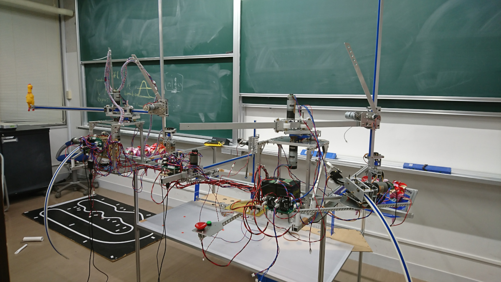
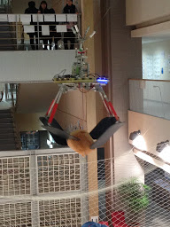
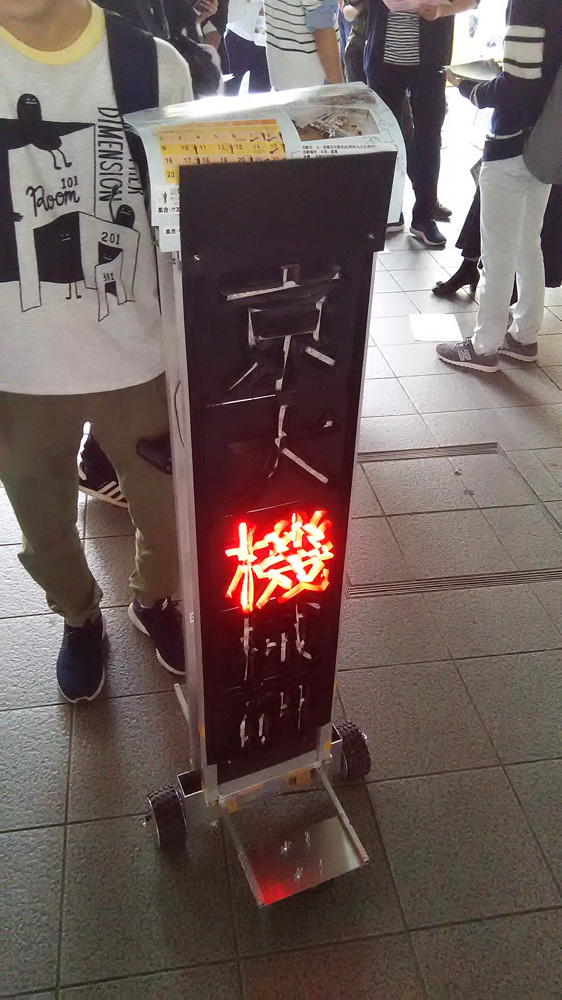
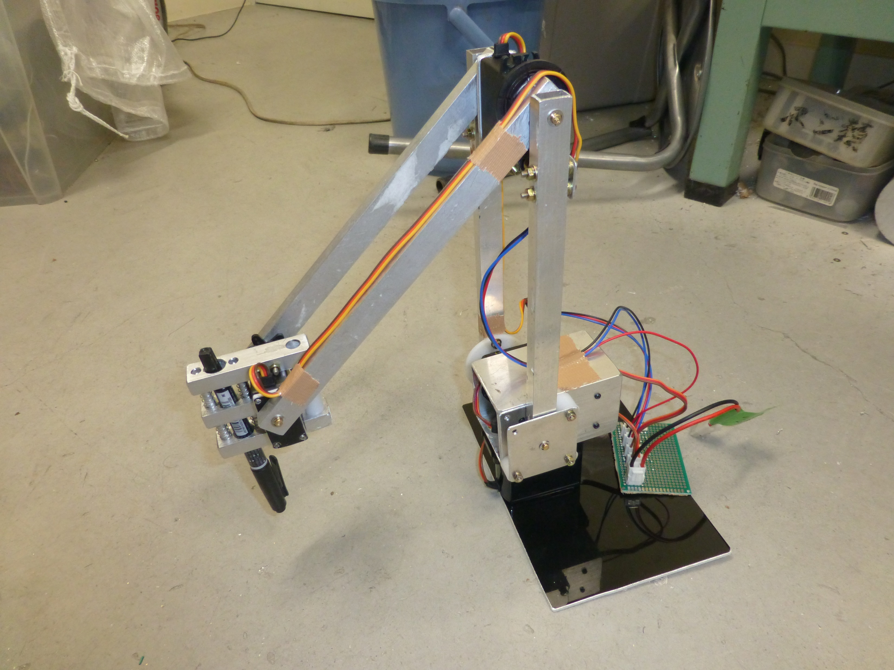

新歓
機械研では4~5月にかけて、新歓を行っています。もちろん、新歓期以外の入会も大歓迎です!!
新歓情報は別ページ詳しく記載していますのでそちらをご覧ください。
新歓情報→Check!!
ロボコン
NHKロボコン
機械研究会はこれまでNHKロボコンにはほとんど出場していませんでしたが、この度2019年度に15年ぶりに出場しました。そして、初優勝することができました。8月25日にモンゴルで開かれるABUロボコンに日本を代表して出場することになります。NHKロボコン2019での機械研究会の活躍については7月15日に放送されるNHKロボコンのほうをご確認ください。
2019年
キャチロボバトルコンテスト
キャチロボバトルコンテストは、京都製作所が主催し、学生が「ものづくり」に 取り組む姿勢を応援するために行われているロボコンです。毎年、課題のお菓子を運搬し、 規定のルールに従い点数で競う競技です。機械研究会は、このキャチロボで2015年、2017年に 準優勝をはたしています。
2016年
ワークは亀田製菓の手塩屋。左右についている大きなハンドで一気に運ぶ姿がかっこ良いです。
2017年
ワークは森永製菓のMARIEビスケット。それぞれ独立した吸引機構により華麗なハンドリングが可能です。
2018年
ワークはグリコのカプリコ。2台の円筒形ハンドや一個鳥、共通エリアのカプリコを回収するカプリコなど、 様々な機構が組み合わさっています。
マイクロマウス
マイクロマウスは、自律的に迷路を探索し、ゴールまでたどり着く時間を競う競技 (マイクロマウス競技)と、ラインを自律的にトレースし、ゴールするまでの時間を競うロボトレース部門 があります。
マイクロマウス
マイクロマウス競技では、最大32×32マスの広大な迷路を手のひらサイズのロボットが自律的に探索します。ロボットは、最初は壁がどこにあるのかを知らない状態で探索を行い、迷路を記憶していきます。そして、迷路の記憶が完了した後、ゴールへの最短経路を走る高速走行にトライします。
ロボトレース
関西合同ロボコン
関西合同ロボコンとは、私たち京都大学や大阪大学、立命館大学、京都工芸繊維大学の技術系サークル が集まって行われるロボコンです。競技内容はロボトレースで競い合い、他大学の技術系サークルとの 交流をしています。
NF(学園祭)
機械研究会はNFで毎年、自分たちが製作したものを教室で展示しています。
ここでは、毎年定番の展示物を紹介します。また、先ほど紹介したキャチロボ、マイクロマウス の展示や個人の製作物も多々展示されるので是非見に来てください。
巨大UFOキャッチャー
機械研名物の巨大UFOキャッチャー。これは見に来るしかない！
イライラ棒
懐かしのイライラ棒が機械研員によってリバイバル！
毎年大盛況です。
新歓ロボ
機械研究会では、自分たちの技術力向上や新入生を快く迎え入れることを目的に 新歓ロボと称して、新二回生が主体となり一つの大型のロボットを製作しています。
2018年新歓ロボ
2018年度新歓ロボは以下の二つを製作しました。広告塔ロボ
画伯
2019年新歓ロボ
2019年度新歓ロボは以下の二つです